ДЕСЕРТЫ
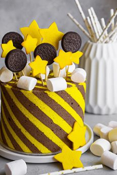
Фантастический торт «Праздник» — лучшее из всех миров
Подробнее
Фантастический торт «Праздник» — лучшее из всех миров Бортовой бисквит Творожно-сливочный крем Декор Основы Хозяйке на заметку
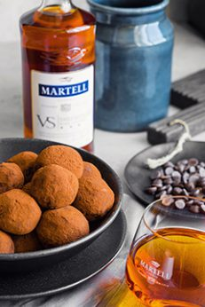
Трюфельные конфеты с вишней для взрослых
Подробнее
Трюфельные конфеты с вишней для взрослых Основы Хозяйке на заметку Другой рецепт Попробуйте трюфельные конфеты на белом шоколаде с лемонграсом и чаем матча! Нед...
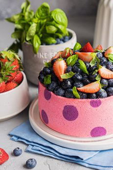
«Горошек» — торт с профитролями, клубникой и черникой
Подробнее
«Горошек» — торт с профитролями, клубникой и черникой Профитроли Заварной бисквит Клубничная начинка Основы Хозяйке на заметку Недав...
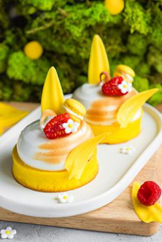
Фантастическая классика из Азии — яичный тарт (Egg Tart)
Подробнее
Фантастическая классика из Азии — яичный тарт (Egg Tart) Основы Хозяйке на заметку Другие тарты Современный тарт «Малибу» Тарт-чемпион с орехами Футур...
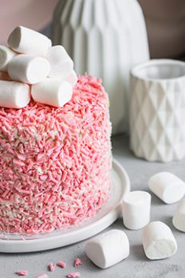
Розовый бисквитный торт «Три шоколада»
Подробнее
Розовый бисквитный торт «Три шоколада» Основы Хозяйке на заметку Недавние обзоры
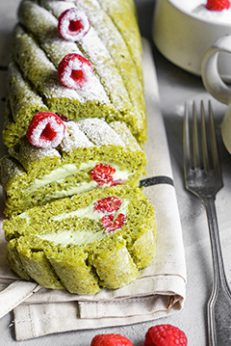
Яркий фисташковый рулет с малиной и чаем матча
Подробнее
Яркий фисташковый рулет с малиной и чаем матча Дакуаз с фисташкой и матча Что такое матча? Основы Хозяйке на заметку Другие рулеты Рулет Кр...
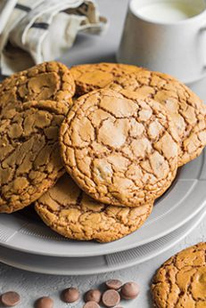
Идеальное печенье с молочным шоколадом
Подробнее
Идеальное печенье с молочным шоколадом Основы Хозяйке на заметку Недавние обзоры
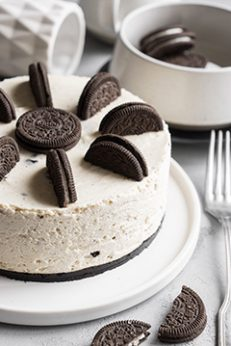
Холодный чизкейк «Орео» — идеальная сладкая магия
Подробнее
Холодный чизкейк «Орео» — идеальная сладкая магия Основы Хозяйке на заметку Недавние обзоры
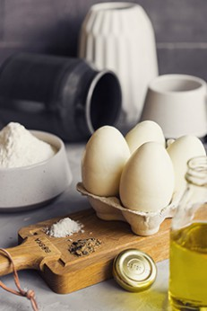
Современные десерты: десерт «Утро»
Подробнее
Современные десерты: десерт «Утро» Конфи «Желток» Желе «Белок» Сборка Скорлупа Хозяйке на заметку Ещё пара рецептов Тарт «Мал...
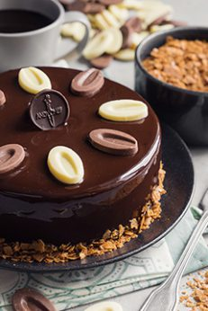
Торт «Три шоколада» — классика от французского шефа
Подробнее
Торт «Три шоколада» — классика от французского шефа Основы Хозяйке на заметку Недавние обзоры

Пирог на скорую руку, который поменяет сознание
Подробнее
Пирог на скорую руку, который поменяет сознание Основы Хозяйке на заметку Недавние обзоры
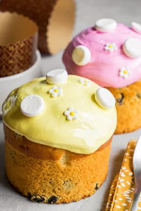
Пасхальный кулич с изюмом, корицей и цедрой лимона, глазурью без белка и хорошим настроением
Подробнее
Пасхальный кулич с изюмом, корицей и цедрой лимона, глазурью без белка и хорошим настроением Глазурь для кулича без белка Основы Хозяйке на заметку ...
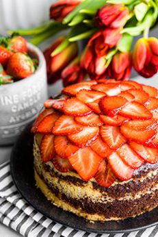
Зебра — самый правильный мраморный кекс
Подробнее
Зебра — самый правильный мраморный кекс А теперь вернёмся к зебре! Основы Хозяйке на заметку Недавние обзоры
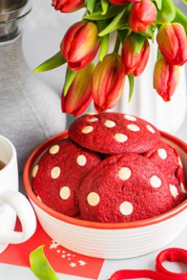
Печенье «Красный бархат» с белым шоколадом
Подробнее
Печенье «Красный бархат» с белым шоколадом Основы Хозяйке на заметку Недавние обзоры
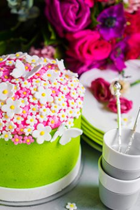
Бисквитный торт с маком и лимоном «Флора»
Подробнее
Бисквитный торт с маком и лимоном «Флора» Мастика Маковый бисквит Японский заварной бисквит Сборка Основы Хозяйке на заметку Неда...
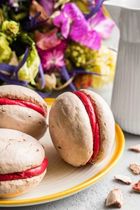
Сэндвичи из меренги с малиной в стиле Йо-Йо!
Подробнее
Сэндвичи из меренги с малиной в стиле Йо-Йо! Основы Хозяйке на заметку Недавние обзоры
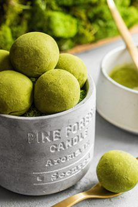
Трюфельные конфеты с японским чаем Матча и лемонграссом
Подробнее
Трюфельные конфеты с японским чаем Матча и лемонграссом Что такое матча? Основы Хозяйке на заметку Ещё рецепт с матча Можно приготовить кекс-зебру из трёх цвето...
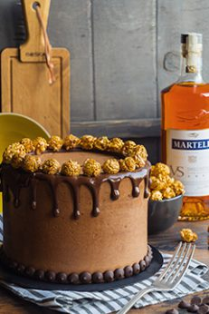
Шоколадный бисквитный торт «Бенджамин»
Подробнее
Шоколадный бисквитный торт «Бенджамин» Основы Хозяйке на заметку Лучшие торты в блоге — Шоколадный на раз-два-три — Красный бархат v.1 — Красны...
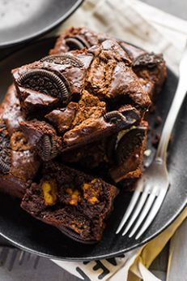
Брауни, которое вызывает стыд и угрызения совести
Подробнее
Брауни, которое вызывает стыд и угрызения совести Основы Хозяйке на заметку Недавние обзоры
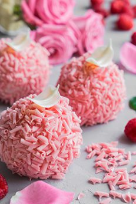
Современные десерты: муссовое пирожное «Исфахан» (Город роз) с малиной, личи и розовой водой
Подробнее
Современные десерты: муссовое пирожное «Исфахан» (Город роз) с малиной, личи и розовой водой Компоте из личи Бисквит Джоконда с малиной Мусс с ...